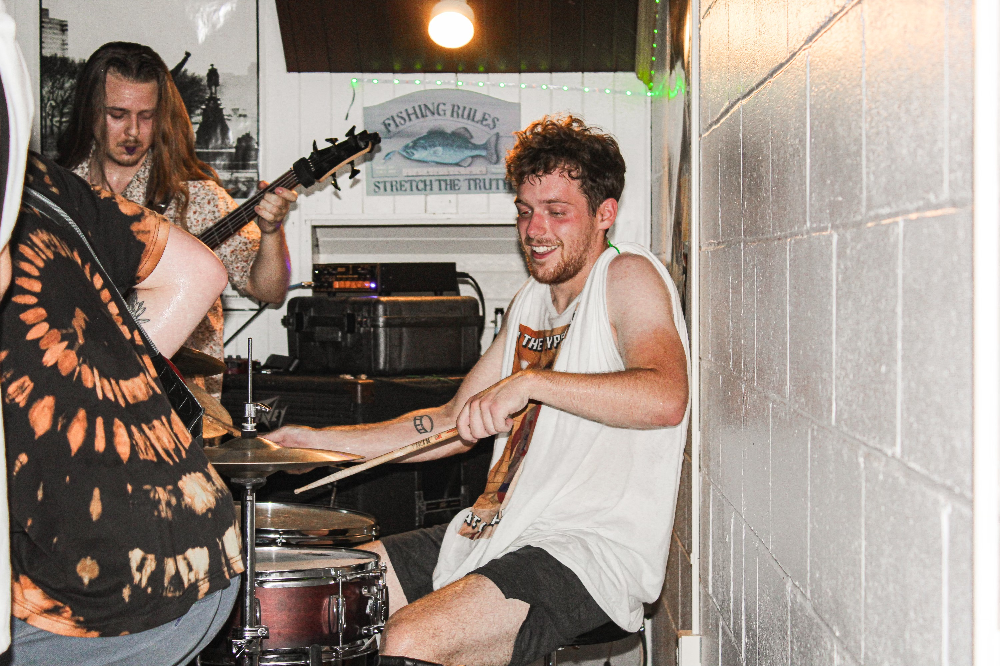
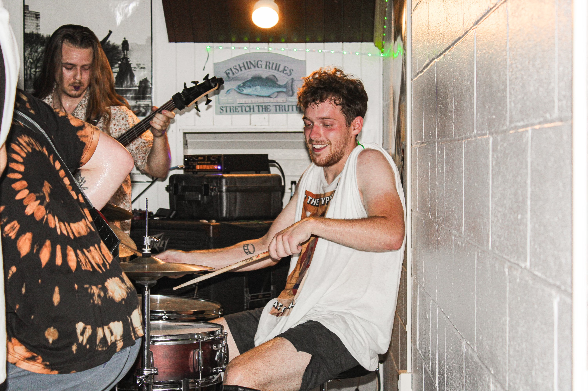
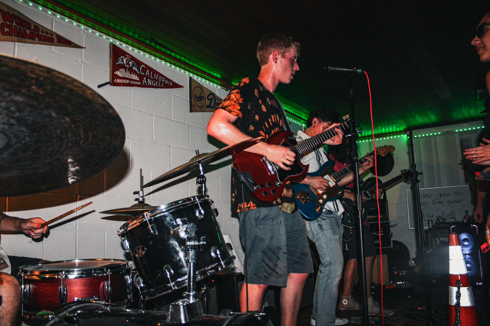
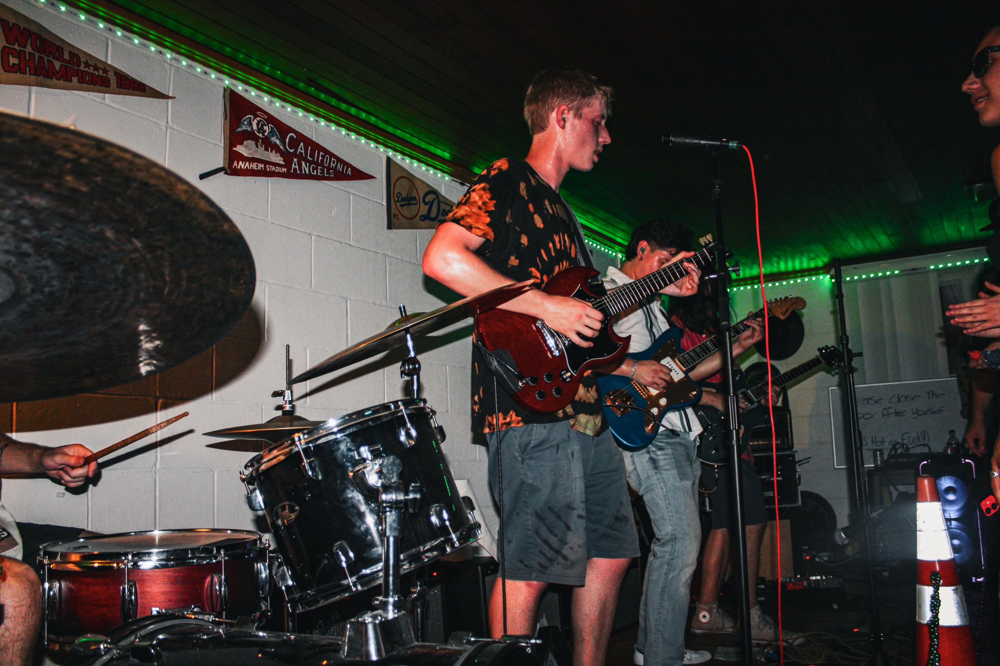
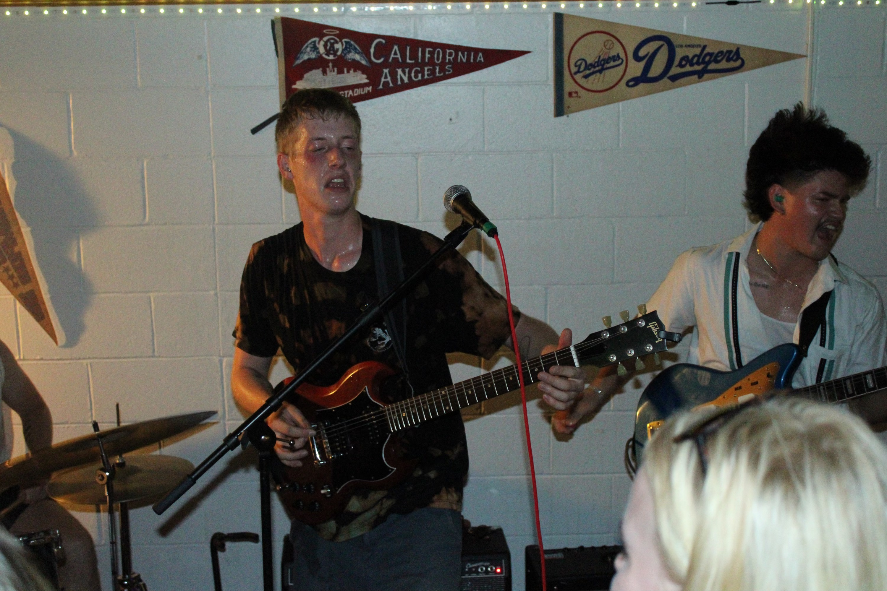
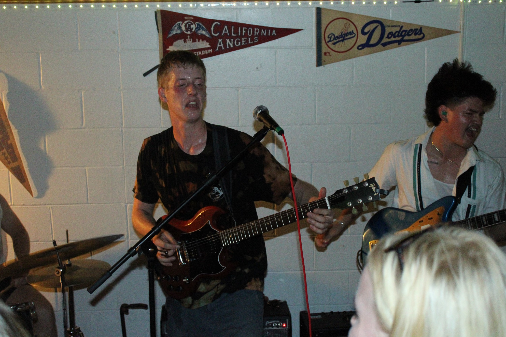
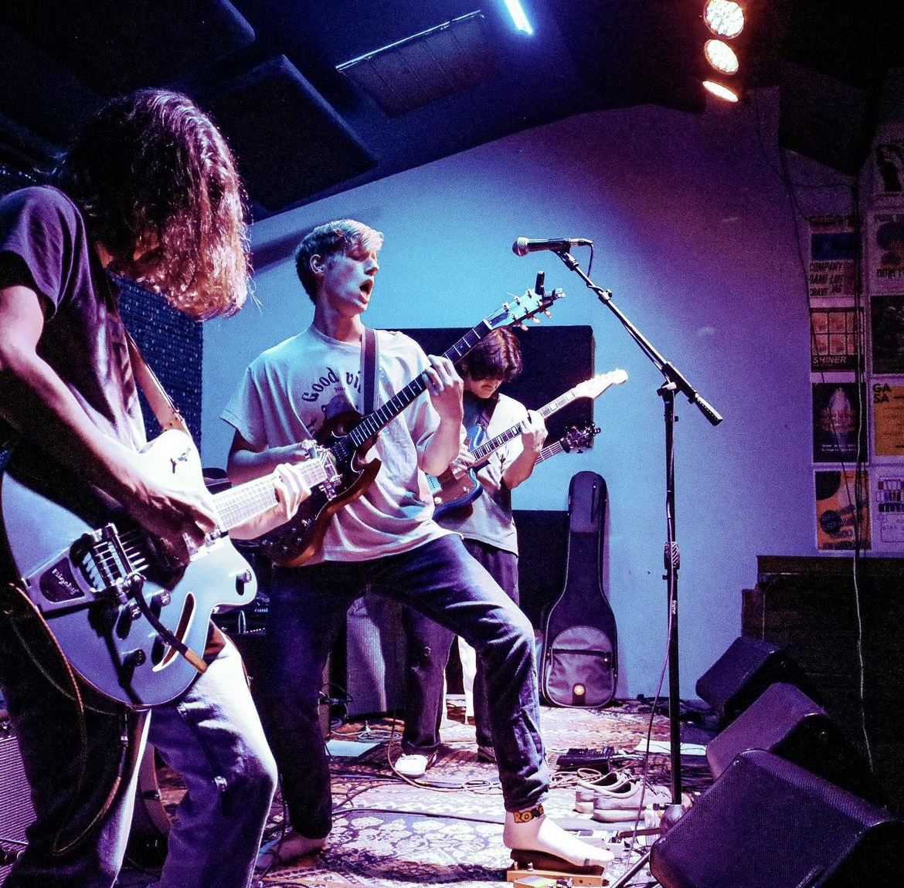
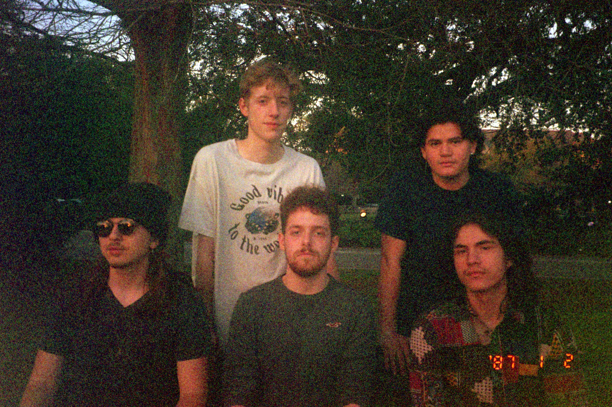
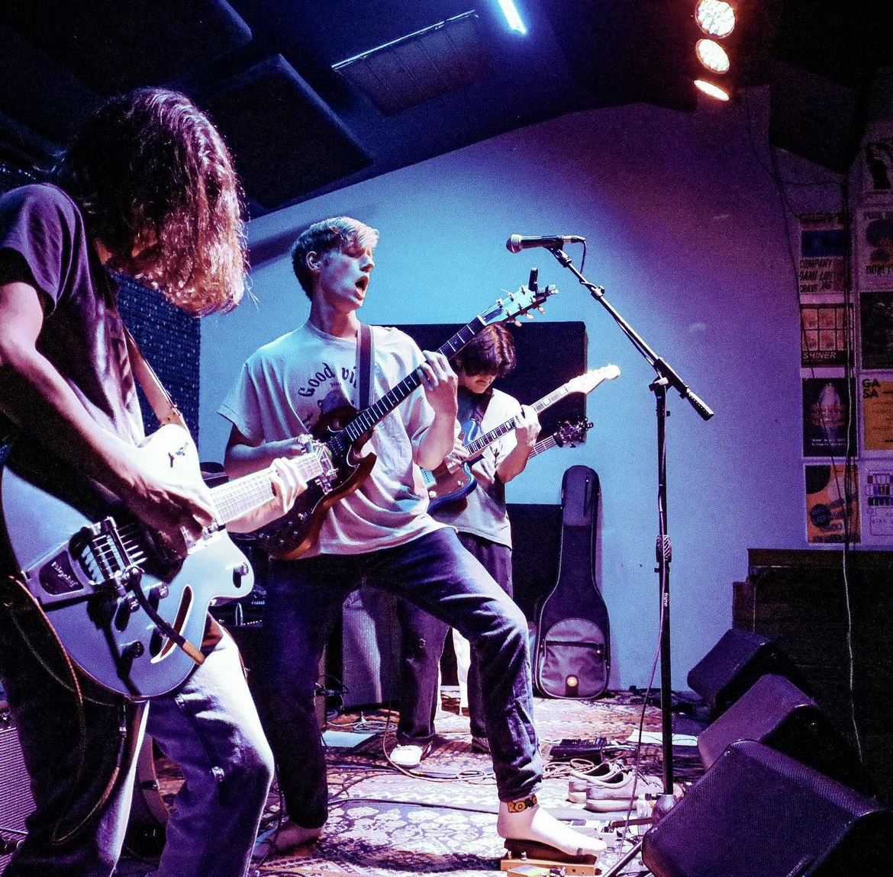
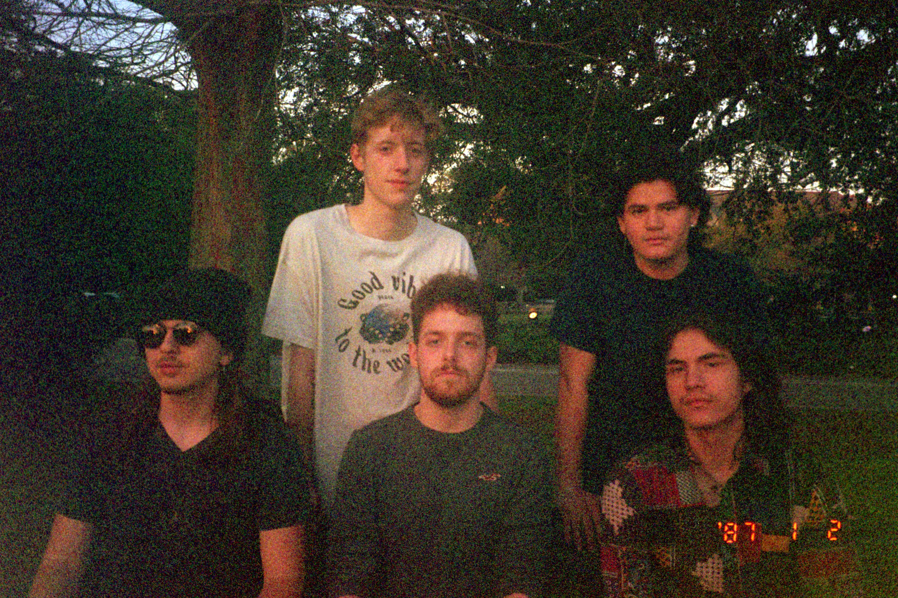

Press Kit
Planet of the Little Green Men

Since forming in late 2021, Planet of the Little Green Men has grown a commited fan base throughout New Orleans. After releasing their debut single "Arrival / Monster in Your Head" they have been able to reach audiences in Europe, South America, and Australia as well.
Stats
"Arrival / Monster in Your Head" has reached 6,720 streams on Spotify alone with 91 monthly listeners: 3,426 streams of "Monster in Your Head" and 2,931 streams of "Arrival"! Their newest single, "Fish Swim", has reached 1,979 all time streams. Among these streams are their 162 Spotify folowers.
Releases
Below are the band's three officially released songs. Look out for some releases coming your way very soon...
Videos
The band continues to record and release the majority of their shows on their Youtube account. Here are some examples of the band's live sound in differing venues:
Photos
Below are an assortment of photos from an early 2023 photo shoot and some live shows:
 

 

 

 





Biographies
Here are two possible choices for a biography. One is for brief descriptions and the other is the band's full length biography.
Short Bio
Like a sentient blob, hell-bent on the feed, oozing out of the neon streets of New Orleans come Planet of the Little Green Men. Kaleidoscopic layers of wailing guitar scream, pulsating and wavering rhythms stacked on top of blistering ear candy that could only be described as a new triumph on classic psychedelia. LGM are no strangers to the psychic connection between music and being, in fact it's what they strive to manifest and produce. With members birthed all across north and central America, LGM's sound and influences are as diverse and inspired as its members. There is no sound LGM will not have their shot at, and no one is safe from their infectious, psychedelic output. The wrath of outer space is here!
Long Bio
While attending Loyola University New Orleans in Fall of 2021, students Ben Heil, Hunter Croft, and Victor Santiago began forming the psych rock experience now known as Planet of the Little Green Men. Influenced by bands like King Gizzard and the Lizard Wizard and Osees, the group combined elements of sci-fi fantasy, mythical imagery, and experimental music as the framework for their evolving sound. The group spent months jamming through rough song ideas and over time succeeded in refining their sound while writing a wide variety of polished, intricate songs. The band's personnel have come from all over the United States and internationally, but changes throughout their history have led the band to be characterized by their current members. The band's voice, Benjamin Heil, pairs his whimsical vocal style with blaring, reverberated lead guitar lines. Jack Owen lays down majestic, silky guitar solos and harmonizes over the lead guitar of fellow guitarist Anton Alvarez, who's playing can be distinguished by the roaring echoes that fill the surrounding area. None of these elements would be as effective, however, without the wrecking crew that is the band's bass and drums. Hunter Croft's drumming transforms the music into a powerful machine that can only be maintained by its engineer Caleb Hedemark, who's chugging bass ties all parts into LGM's sound.
Jump forward to January 2023 when Planet of the Little Green Men released their debut single “Arrival / Monster in Your Head” on all major streaming platforms. To date, it has received very positive response, attracting new fans and listeners from their local New Orleans Parish to far-reaching places like Hungary and Belize. Their second release, “Fish Swim”, has been successful as a single and introduced their audience to a softer side of their writing. Today, the band continues to regularly write new songs and evolve their sound by playing live shows with other local artists around their home turf of New Orleans. Additionally, LGM has recorded their first full length album, Count The Goblins, which will showcase new songs from their current repertoire as well as the recently released tracks from their debut singles. Look out for Planet of the Little Green Men landing in the finest record stores and local music venues near you this Winter.
Press Quotes
The band has received a few reviews from local publications. Here are a couple examples:
OffBeat Magazine
"Psychedelic acid rock with Cake-esque talk-singing to aggressive punk shouting and speed without sacrificing the high-fidelity instrumentation much like British experimental rock band Black Midi." - Dalton Spangler
Loyola Maroon
"It's a lot of weird elements meshed together that sounds really fucking good"
"The genre-bending experience was immaculate."
Performance Calendar
Our performance calendar can be found right here on our website: Shows
Social Media


Stage Plot

Contact
Personnel
Ben Heil: bwheil@my.loyno.edu
Jack Owens: jsowen@my.loyno.edu
Caleb Hedemark: cjhedema@my.loyno.edu
Anton Alvarez: agalvare@my.loyno.edu
Hunter Croft: hdcroft@my.loyno.edu
Booking/Management
Diego Gutierrez: dgutierrez.mgmt@gmail.com + 415-235-7510